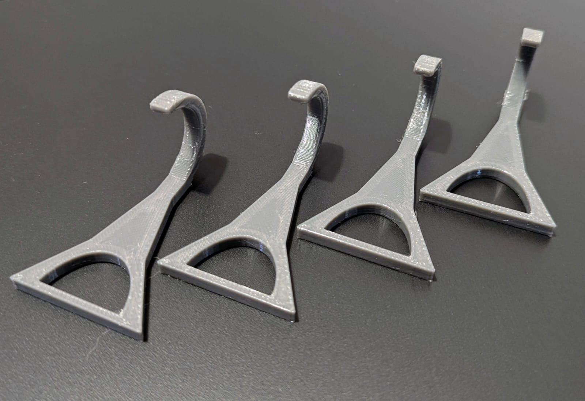
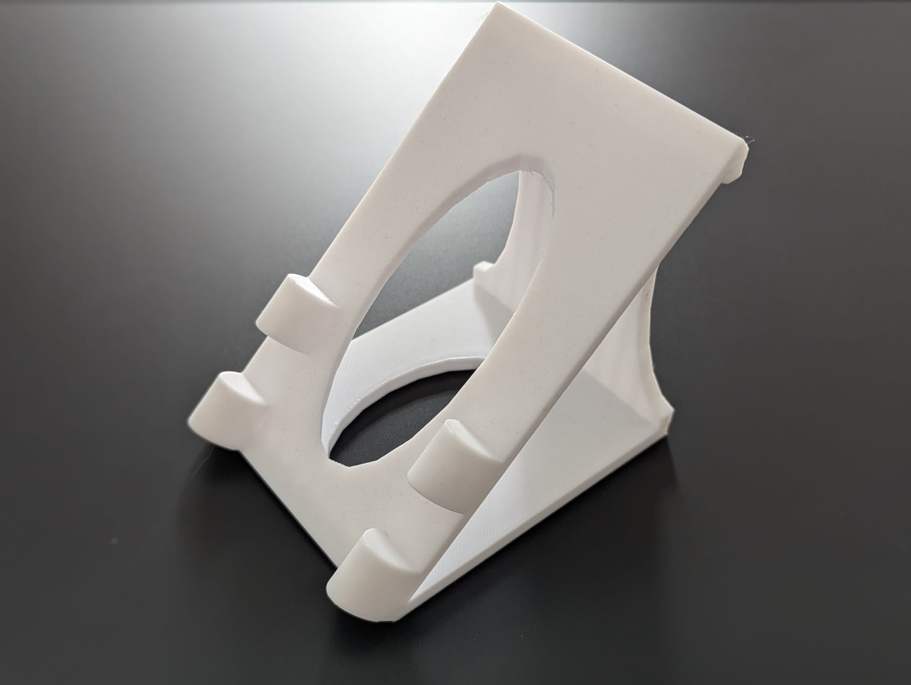
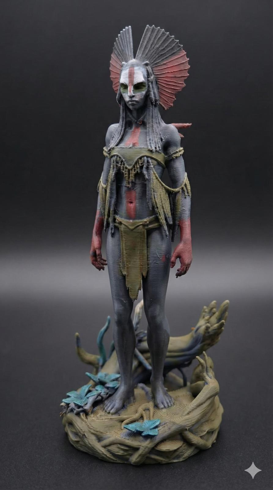

Realizacje
Kilka przykładów praktycznych wydruków. Najlepiej pokazują, w czym druk 3D ma sens: naprawy, dopasowanie i nietypowe zastosowania.

PETG+ / Wytrzymałość
Zestaw uchwytów technicznych
Problem: potrzebne były elementy montażowe dopasowane do konkretnego zastosowania.Rozwiązanie: wydruk z mocniejszego materiału i ustawieniami pod obciążenie.

PLA / Domowe zastosowanie
Uchwyt na wymiar
Problem: gotowe uchwyty nie pasowały do miejsca montażu.Rozwiązanie: prosty wydruk dopasowany do konkretnego wymiaru i sposobu użycia.

PLA / Część zamienna
Pokrętło do sprzętu domowego
Problem: oryginalna część była uszkodzona albo trudno dostępna.Rozwiązanie: odtworzenie kształtu i wykonanie zamiennika dopasowanego do urządzenia.

PLA / Detal
Figurka kolekcjonerska
Problem: potrzebny był niestandardowy model dekoracyjny.Rozwiązanie: dokładny wydruk z dbałością o szczegóły i późniejsze wykończenie ręczne.